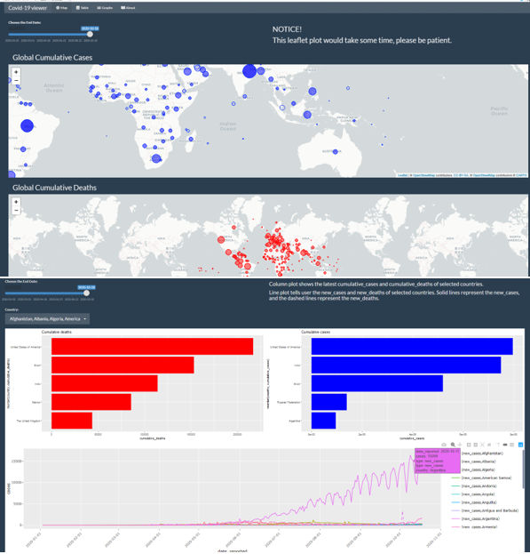

In this blog post, I will be reviewing an R package (How fun is that?), this package named covid19ViewerShiny is authored by Yuheng Cui, containing different functions, a dataset and a shiny application which depicts the COVID19 pandemic which is currently running rampant throughout the world.
The development version of the package can be found in GITHUB.
The main goal of covid19ViewerShiny package is to a compact and consolidated way for users to visualize and understand the baneful effects of the pandemic. This package has a shiny dashboard that visualizes the condition of the pandemic in all countries of the world. It contains three functions:
launch_app() : This function helps the user launch the shiny dashboard for user interaction and more.
multiSelection() : This function helps the user to create a drop list in the shiny application, which contains country names that the user wishes to view the condition of. This is a function which is for creating the user interaction with the app.
colPlot() : This function is provided to create a column plot within the shiny app which visualizes the cumulative_cases and cumulative deaths of top 5 countries in each category.This function is for removing redundancy within the codes for creation of the plots.
From the name, the README file and the pkgdown web page, it was quite clear what this package does, I expected this package to produce a shiny application with just one function, which shows the pandemic rise and the deaths associated within each country, a dataset and also three functions.
And I would say that the package delivered what was spoken of within the documentations and the name. The launch_app() is the main function for this app, it was easy for me to successfully run the function to get a shiny app without any extra work from my end. The files and folders are structured and I could find my way around them with ease.
The shiny app as spoken in the article by the author: covid19 app,contains four tabs within the app.I really like the layout of app, it is not too much information and cramped up. Just enough information for user’s understanding.
The application provides a slider input for the dates reflecting the cases based on the user’s input, a line graph which shows the cases within the countries chosen by the user.
I would like to start off by saying the package itself as a whole is structured , accomplishes what is expected of it without any errors. Although I did notice that the test for server function colPlot() was not done, tests are very important when making a package, it gives a clear understanding to the developer whether the functions made are effective and working well for any type of input values.
<p>, I would like to add that the author does not have to write
tag for every line, as the
tag does tell us it is a paragraph.
Lastly, the documentation, I was able to navigate myself through this R package thanks to the documentation made. There were three points that I would like to convey:
I found it to be very difficult for understanding how to give the arguments for the function, colPlot(), the function failed for me outside the app and I did try to find out different ways I could use it but in vain , would really appreciate it if that was given more clearly.
After running the command renv::dependencies() in the project, I found that a couple of R package were not mentioned in the DESCRIPTION file Suggests/Imports sections like janitor,usethis,tidyverse and pkgdown. I would recommend using renv::depenedencies on the future packages to know which are the packages you can/should include.
Lastly, the documentation for the shiny app, as not all people who look at the visualizations can take away what the author is trying to convey, maybe a summary of each plot, if the page is completely filled , you could try using tabset for a better understanding of what is.
Other than being amazed by the amount of work put into the package, it is always a learning step when looking into the codes and ideas of other people. Easier way of implementing any code you thought otherwise, so it is always a pleasure to look at the codes which create such fantastic plots(the train of thought, All Aboard!).
Checklist:
A Glimpse of the dashboard

Hadley Wickham, Romain François and Lucy D’Agostino McGowan (2020). emo: Easily Insert ‘Emoji’. R package version 0.0.0.9000. https://github.com/hadley/emo